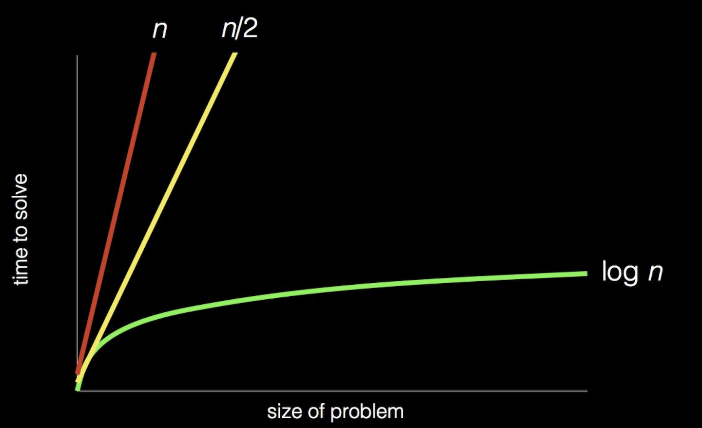

讲座 1
Overview
-
Computational thinking is thinking algorithmically, taking inputs to a problem and carefully going step by step to produce an output.
-
What is 计算机科学? Fundamentally, 计算机科学 is problem-solving. We have some input and, via some process, generate some 排序 of output.
Representing Inputs and Outputs
Numbers
-
We might use our fingers and toes to count, holding up 1 finger for 1 item, 2 fingers for 2 items, etc. This is a representation in the unary system.
- We might use a system that we’ve grown up with, the decimal system, where we use digits from 0 through 9.
-
For
123, we know that that the3is in the ones place, the2is in the tens place, and the1is in the hundreds place.100s 10s 1s 1 2 3 - This gives us (3 × 1) + (2 × 10) + (1 × 100) = 123.
- 笔记 that in the decimal system, we use powers of 10.
-
- Computers use a binary representation.
- In binary, we only use 0 or 1, or if thinking of a switch, off and on.
- In the binary system, we use powers of 2.
-
For
110, we know that0is in the ones place,1is in the twos place, and1is in the fours place.4s 2s 1s 1 1 0 - This gives us (0 × 1) + (1 × 2) + (1 × 4) = 6.
-
If we wanted to represent 8 in binary, we would need another digit, or another switch.
8s 4s 2s 1s 1 0 0 0 - These digits are also called bits, and 8 bits make up 1 byte.
- This gives us (0 × 1) + (0 × 2) + (0 × 4) + (1 × 8) = 8.
- Computers today have millions of these switches (also called transistors), but to represent larger and larger values and do 更多 and 更多 computationally, it will require 更多 physical storage.
Letters
-
ASCII is a standardized system created by humans mapping from numbers to letters.
- The decimal number 65 maps to the letter A, 66 maps to B, and so on.
- The decimal number 97 maps to lowercase a, 98 maps to b, and so on.
- ASCII tends to use 7 or 8 bits total, so there are only 128 or 256 possible representations.
- How these bits are interpreted (as letters, as numbers, or 更多) depends on the context.
-
Unicode is another system that additionally includes other texts we might see, such as letters with accents, certain foreign punctuation, or even emojis.
- 😂 has a decimal representation of
128514.
- 😂 has a decimal representation of
-
For 示例, we might receive a message that says
72 73 33. Accounting for ASCII mappings, we get72 73 33 H I ! In this 示例, 笔记 that the abstraction greatly benefits us, as viewing
HI!is much easier than viewing a series of 0’s and 1’s. - Abstraction allows us to think 关于 a problem at a higher level rather than at the lowest level that it is implemented in.
Media
- RGB allows us to represent color.
- We use 8 bits to represent red, 8 bits to represent green, and 8 bits to represent blue.
- To select a color we would like, we just pick how much red we want, how much green we want, and how much blue we want.
-
For 示例, if we have this set of bits:
We would get this shade of yellow:
- Any image or photo on a screen is just a pattern of pixels, and every pixel has 24 bits representing its particular color.
-
We can see the individual pixels if we zoom in on this emoji:
-
We might notice that images we 下载 have sizes of kilobytes (thousands of bytes) or megabytes (millions of bytes).
-
- A 视频 is a series of images that is being presented so quickly, perhaps 24 to 30 frames per second, that it presents an illusion of movement.
- In this case, we have many levels of abstraction.
- A 视频 is a collection of images.
- An image is a collection of pixels.
- A pixel is some number of bits representing some amount of red, green, and blue.
- A bit is a digital representation of something being present, like electricity or not, or an on switch or off.
算法
- We can now represent inputs and outputs. Now, we’ll need a process by which we can generate this output.
- 算法 are step by step instructions for solving a problem.
Phone Book Searching
-
Suppose we wanted to find Mike Smith in a phone book. How might we find his number?
-
We might 搜索 through the phone book person by person, flipping page by page, until we either find Mike Smith or reach the end of the phone book, meaning Mike Smith isn’t in the book. For a phone book with 1000 pages, if Mike isn’t in the book (worst case), we would have to 搜索 1000 pages.
-
We might 搜索 through the phone book flipping two pages at once. If we go too far, then we’ll have to flip 返回 one page to check that page. For a phone book with 1000 pages, if Mike isn’t in the book, we would have to 搜索 500 pages.
-
We might also flip to the middle of the phone book and 笔记 that we’re in the M 小组课. We know that Mike Smith must come afterwards, so we can now ignore the first half of the phone book. Repeating this strategy, for a phone book with 1000 pages, if Mike isn’t in the book, we would only need to 搜索 approximately 10 pages.
Efficiency
-
We can visualize effiencies of 算法 on a plot.

- Let
nbe the number of pages in the phone book. - For our first algorithm, our searching 时间 increases linearly with the size of the phone book.
- For our second algorithm, we 搜索 half as many pages, so our searching 时间 is still linear, but 较少 steep.
- For our final algorithm, our 搜索 时间 is logarithmic with respect to the number of pages. As the size of the phone book increases, our 搜索 时间 increases at a slower rate.
- Concretely, if our phone book went from 1000 pages to 2000 pages, we would only need to 搜索 1 additional page.
Pseudocode
- Pseudocode generally involves using concise phrases in English to describe an algorithm step by step so everyone can understand the algorithm.
-
For our phone book searching, we might have the following pseudocode:
1 pick up phone book 2 open to middle of phone book 3 look at page 4 if Smith is on page 5 call Mike 6 else if Smith is earlier in book 7 open to middle of left half of book 8 go back to line 3 9 else if Smith is later in book 10 open to middle of right half of book 11 go back to line 3 12 else 13 quit
-
Some of these lines start with verbs, or actions. We’ll start calling these functions. These statements tell the human or computer what to do.
1 pick up phone book 2 open to middle of phone book 3 look at page 4 if Smith is on page 5 call Mike 6 else if Smith is earlier in book 7 open to middle of left half of book 8 go back to line 3 9 else if Smith is later in book 10 open to middle of right half of book 11 go back to line 3 12 else 13 quit
-
Some of these lines begin with conditions, or forks in the road. We make a decision on which way to go.
1 pick up phone book 2 open to middle of phone book 3 look at page 4 if Smith is on page 5 call Mike 6 else if Smith is earlier in book 7 open to middle of left half of book 8 go back to line 3 9 else if Smith is later in book 10 open to middle of right half of book 11 go back to line 3 12 else 13 quit
-
To decide which way to go, we need Boolean expressions. These expressions have yes/no or true/false 答案.
1 pick up phone book 2 open to middle of phone book 3 look at page 4 if Smith is on page 5 call Mike 6 else if Smith is earlier in book 7 open to middle of left half of book 8 go back to line 3 9 else if Smith is later in book 10 open to middle of right half of book 11 go back to line 3 12 else 13 quit
-
We might also have loops, or cycles that get us to do something again and again until some condition is no longer true.
1 pick up phone book 2 open to middle of phone book 3 look at page 4 if Smith is on page 5 call Mike 6 else if Smith is earlier in book 7 open to middle of left half of book 8 go back to line 3 9 else if Smith is later in book 10 open to middle of right half of book 11 go back to line 3 12 else 13 quit
Abstraction
- Abstraction is a technique where we can think 关于 a problem 更多 usefully at a higher level as opposed to the lowest level that it is implemented in.
- Choosing an appropriate level of abstraction is important – too much can lead to ambiguity and too little can become difficult to understand or tedious.
- In an ideal 世界, only one human would need to write code at a low level (like drawing a square or circle), and the rest of us can build on top of that (using these pre-made squares and circles), coding at a higher level.